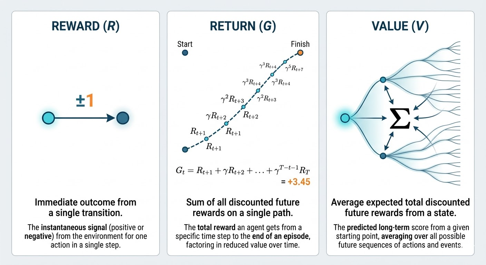
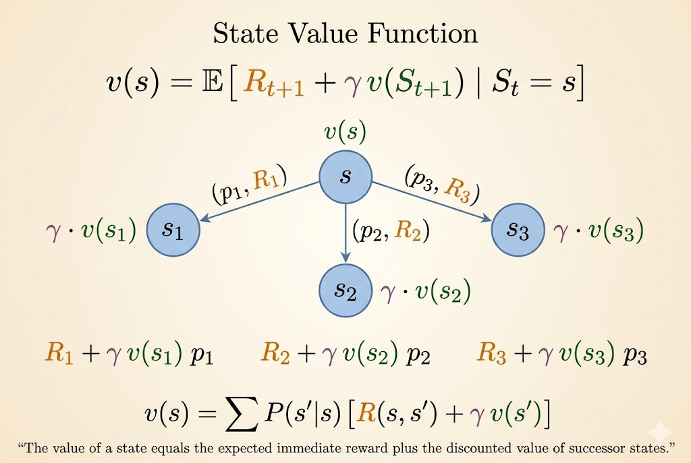
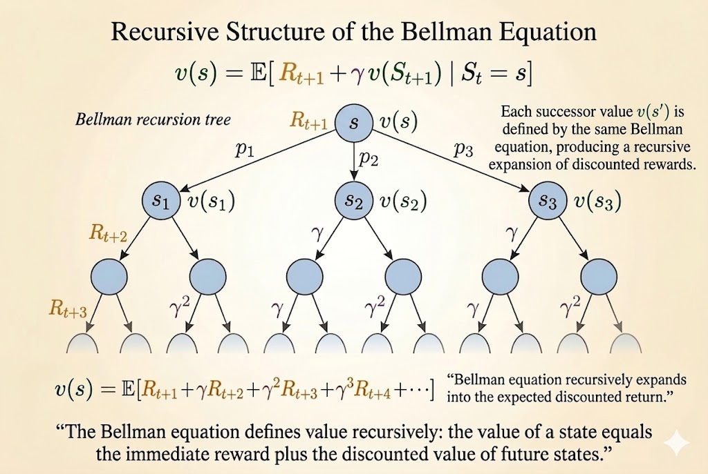

graph LR
FB((Facebook))
C1((Class 1))
C2((Class 2))
C3((Class 3))
Pub((Pub))
Pass((Pass))
Sleep[Sleep]
C1 -->|0.5| FB
FB -->|0.1| C1
FB -->|0.9| FB
C1 -->|0.5| C2
C2 -->|0.8| C3
C2 -->|0.2| Sleep
C3 -->|0.6| Pass
C3 -->|0.4| Pub
Pass -->|1.0| Sleep
Pub -->|0.2| C1
Pub -->|0.4| C2
Pub -->|0.4| C3
David Silver RL Course - Lecture 2: Markov Decision Process
Reinforcement Learning
RL
David Silver
Markov Process
Markov Decision Process
Bellman Equation
Lecture 2 notes on Markov property, Markov reward processes, return, discounting, value functions, the Bellman equation, and the extension from MRPs to MDPs.
This lecture moves from the general RL setup of Lecture 1 to the mathematical objects that make RL analyzable: Markov processes, Markov reward processes, and Markov decision processes. The Bellman equation is the central idea connecting them.
Markov Process
Markov Property
The Markov property says: the future is independent of the past given the present.
A state \(S_t\) is Markov if and only if
\[ \mathbb{P}[S_{t+1} \mid S_t] = \mathbb{P}[S_{t+1} \mid S_1, \dots, S_t]. \]
Two key consequences:
- the state captures all relevant information from history
- once the state is known, the rest of the history can be discarded
State Transition Matrix
For a Markov state \(s\) and successor state \(s'\), define the transition probability
\[ \mathcal{P}_{ss'} = \mathbb{P}[S_{t+1} = s' \mid S_t = s]. \]
If there are \(n\) states, then the transition matrix is an \(n \times n\) matrix:
\[ \mathcal{P} = \begin{bmatrix} \mathcal{P}_{11} & \dots & \mathcal{P}_{1n} \\ \vdots & \ddots & \vdots \\ \mathcal{P}_{n1} & \dots & \mathcal{P}_{nn} \end{bmatrix}. \]
Each row sums to \(1\):
\[ \sum_{s'} \mathcal{P}_{ss'} = 1. \]
A Markov process, or Markov chain, is a memoryless stochastic process defined by:
- \(S\): a finite set of states
- \(\mathcal{P}\): the state transition matrix
Example: Student Markov Chain
This is a pure Markov process: there are states and transition probabilities, but no actions and no rewards yet.
Example episodes starting from Class 1:
- C1 C2 C3 Pass Sleep
- C1 FB FB C1 C2 Sleep
- C1 C2 C3 Pub C2 C3 Pass Sleep
- C1 FB FB C1 C2 C3 Pub C1 FB FB FB C1 C2 C3 Pub C2 Sleep
Transition Matrix
Using the state order
\[ [\text{C1}, \text{C2}, \text{C3}, \text{Pass}, \text{Pub}, \text{FB}, \text{Sleep}], \]
the transition matrix is
\[ \mathcal{P} = \begin{bmatrix} 0 & 0.5 & 0 & 0 & 0 & 0.5 & 0 \\ 0 & 0 & 0.8 & 0 & 0 & 0 & 0.2 \\ 0 & 0 & 0 & 0.6 & 0.4 & 0 & 0 \\ 0 & 0 & 0 & 0 & 0 & 0 & 1.0 \\ 0.2 & 0.4 & 0.4 & 0 & 0 & 0 & 0 \\ 0.1 & 0 & 0 & 0 & 0 & 0.9 & 0 \\ 0 & 0 & 0 & 0 & 0 & 0 & 1.0 \end{bmatrix}. \]
Markov Reward Process
A Markov reward process (MRP) adds rewards and discounting to a Markov process:
- \(S\): states
- \(\mathcal{P}\): transition matrix
- \(\mathcal{R}\): reward function, where \[ \mathcal{R}_s = \mathbb{E}[R_{t+1} \mid S_t = s] \]
- \(\gamma\): discount factor
The student example becomes an MRP if we assign each state an immediate reward.
graph LR
FB(("Facebook<br/>R = -1"))
C1(("Class 1<br/>R = -2"))
C2(("Class 2<br/>R = -2"))
C3(("Class 3<br/>R = -2"))
Pub(("Pub<br/>R = +1"))
Pass(("Pass<br/>R = +10"))
Sleep["Sleep<br/>R = 0"]
C1 -->|0.5| FB
FB -->|0.1| C1
FB -->|0.9| FB
C1 -->|0.5| C2
C2 -->|0.8| C3
C2 -->|0.2| Sleep
C3 -->|0.6| Pass
C3 -->|0.4| Pub
Pass -->|1.0| Sleep
Pub -->|0.2| C1
Pub -->|0.4| C2
Pub -->|0.4| C3
Return
The return from time \(t\) is the discounted sum of future rewards:
\[ G_t = R_{t+1} + \gamma R_{t+2} + \gamma^2 R_{t+3} + \cdots = \sum_{k=0}^{\infty} \gamma^k R_{t+k+1}. \]
where \(\gamma \in [0,1]\).
Interpretation:
- \(\gamma\) close to \(0\) gives myopic evaluation
- \(\gamma\) close to \(1\) gives far-sighted evaluation
- a reward received \(k\) steps later is weighted by \(\gamma^k\)
Why Discount?
Discounting is useful for several reasons:
- it is mathematically convenient
- it keeps returns finite in cyclic continuing processes
- it models uncertainty about the future
- in finance, immediate rewards can earn more interest
- human and animal behavior often prefers immediate reward
If all episodes terminate, it is sometimes valid to use \(\gamma = 1\).

Value Function
The value function of a state is its long-term expected return:
\[ v(s) = \mathbb{E}[G_t \mid S_t = s]. \]
For the student MRP, different discount factors produce different state values.
Example Values When \(\gamma = 0.9\)
graph LR
FB(("Facebook<br/>v = -7.6"))
C1(("Class 1<br/>v = -5.0"))
C2(("Class 2<br/>v = 0.9"))
C3(("Class 3<br/>v = 4.1"))
Pub(("Pub<br/>v = 1.9"))
Pass(("Pass<br/>v = 10"))
Sleep["Sleep<br/>v = 0"]
FB -->|0.9| FB
FB -->|0.1| C1
C1 -->|0.5| FB
C1 -->|0.5| C2
C2 -->|0.2| Sleep
C2 -->|0.8| C3
C3 -->|0.4| Pub
C3 -->|0.6| Pass
Pass -->|1.0| Sleep
Pub -->|0.2| C1
Pub -->|0.4| C2
Pub -->|0.4| C3
style Sleep fill:#f9f,stroke:#333,stroke-width:2px
Example Values When \(\gamma = 1.0\)
graph LR
FB(("Facebook<br/>v = -23"))
C1(("Class 1<br/>v = -13"))
C2(("Class 2<br/>v = 1.5"))
C3(("Class 3<br/>v = 4.3"))
Pub(("Pub<br/>v = 0.8"))
Pass(("Pass<br/>v = 10"))
Sleep["Sleep<br/>v = 0"]
FB -->|0.9| FB
FB -->|0.1| C1
C1 -->|0.5| FB
C1 -->|0.5| C2
C2 -->|0.2| Sleep
C2 -->|0.8| C3
C3 -->|0.4| Pub
C3 -->|0.6| Pass
Pass -->|1.0| Sleep
Pub -->|0.2| C1
Pub -->|0.4| C2
Pub -->|0.4| C3
style Sleep fill:#f9f,stroke:#333,stroke-width:2px
Bellman Equation
The Bellman equation decomposes the value of a state into:
- immediate reward
- discounted value of the next state
Its core form is
\[ v(s) = \mathbb{E}[R_{t+1} + \gamma v(S_{t+1}) \mid S_t = s]. \]

Step-by-Step Derivation
Start from the definition of value:
\[ v(s) = \mathbb{E}[G_t \mid S_t = s]. \]
Unroll the return:
\[ v(s) = \mathbb{E}[R_{t+1} + \gamma R_{t+2} + \gamma^2 R_{t+3} + \cdots \mid S_t = s]. \]
Factor out the first step:
\[ v(s) = \mathbb{E}[R_{t+1} + \gamma(R_{t+2} + \gamma R_{t+3} + \cdots) \mid S_t = s]. \]
Recognize the future return:
\[ v(s) = \mathbb{E}[R_{t+1} + \gamma G_{t+1} \mid S_t = s]. \]
Then use conditional expectation:
\[ v(s) = \mathbb{E}[R_{t+1} + \gamma v(S_{t+1}) \mid S_t = s]. \]

Matrix Form
For an MRP, the Bellman equation can be written compactly as
\[ v = \mathcal{R} + \gamma \mathcal{P}v. \]
So the direct solution is
\[ v = (I - \gamma \mathcal{P})^{-1} \mathcal{R}. \]
This is elegant, but it scales poorly. Matrix inversion is feasible only for small MRPs, not for large real-world state spaces. That is why RL relies on iterative methods such as dynamic programming, Monte Carlo evaluation, and temporal-difference learning.
Markov Decision Process
An MDP adds actions to an MRP. It is usually defined by
\[ \langle \mathcal{S}, \mathcal{A}, \mathcal{P}, \mathcal{R}, \gamma \rangle. \]
Now transitions and rewards depend on actions, not just on states.
Policy
A policy is a distribution over actions conditioned on the current state:
\[ \pi(a \mid s) = \mathbb{P}[A_t = a \mid S_t = s]. \]
In an MDP, the policy depends on the current state, not the full history.
Value Functions in an MDP
State-Value Function
The state-value function under policy \(\pi\) is
\[ v_\pi(s) = \mathbb{E}_\pi[G_t \mid S_t = s]. \]
Action-Value Function
The action-value function under policy \(\pi\) is
\[ q_\pi(s,a) = \mathbb{E}_\pi[G_t \mid S_t = s, A_t = a]. \]
Optimal Value Functions
The optimal state-value function is
\[ v_*(s) = \max_\pi v_\pi(s), \]
and the optimal action-value function is
\[ q_*(s,a) = \max_\pi q_\pi(s,a). \]
These define the best achievable long-term performance in the MDP.
Optimal Policy
Define a partial order on policies:
\[ \pi \ge \pi' \quad \text{if } v_\pi(s) \ge v_{\pi'}(s) \text{ for all } s. \]
For any finite MDP, there exists an optimal policy \(\pi_*\) such that
\[ v_{\pi_*}(s) = v_*(s), \qquad q_{\pi_*}(s,a) = q_*(s,a). \]
An optimal policy can be obtained greedily from \(q_*\):
\[ \pi_*(a \mid s) = \begin{cases} 1, & a \in \arg\max_{a' \in \mathcal{A}} q_*(s,a') \\ 0, & \text{otherwise}. \end{cases} \]
So there is always a deterministic optimal policy for a finite MDP.
Why Optimal Control Is Harder
For MRPs, the Bellman equation is linear:
\[ v = \mathcal{R} + \gamma \mathcal{P}v. \]
For optimal control, the Bellman optimality equation introduces a \(\max\):
\[ v_*(s) = \max_a \mathbb{E}[R_{t+1} + \gamma v_*(S_{t+1}) \mid S_t = s, A_t = a]. \]
That \(\max\) makes the problem nonlinear, so the neat direct matrix-inverse solution disappears. This is why MDP control usually requires iterative algorithms such as value iteration, policy iteration, Q-learning, and SARSA.
Extensions to MDPs
Infinite MDPs
Standard MDPs assume finitely many states and actions, but many real systems require larger spaces:
- countably infinite state/action spaces
- continuous state/action spaces
For countably infinite spaces, Bellman equations still use summation because states can still be enumerated one by one. For continuous spaces, summations are replaced by integrals. For example, a continuous-action value expression takes the form
\[ v_\pi(s) = \int_a \pi(a \mid s) q_\pi(s,a)\, da. \]
Linear quadratic regulator (LQR) is a famous continuous-control special case with an exact closed-form solution.
POMDPs
In a partially observable MDP (POMDP), the agent does not directly observe the true state \(s_t\). Instead, it receives an observation \(o_t\) that provides only partial information about the state.
A POMDP is often written as
\[ \langle \mathcal{S}, \mathcal{A}, \mathcal{O}, \mathcal{P}, \mathcal{R}, \mathcal{Z}, \gamma \rangle, \]
where \(\mathcal{O}\) is the observation space and \(\mathcal{Z}\) is the observation model:
\[ \mathcal{Z}_{s'o}^a = \mathbb{P}[O_{t+1} = o \mid S_{t+1} = s', A_t = a]. \]
The key difficulty is that the observation itself is not Markov. To act optimally, the agent maintains a belief state: a probability distribution over hidden states conditioned on the full history:
\[ b(s) = \mathbb{P}[S_t = s \mid A_1, O_1, \dots, A_{t-1}, O_t]. \]
That belief state is Markov. So a POMDP can be reduced to an MDP over a continuous belief space, often called a belief MDP.
Ergodic and Average-Reward MDPs
For continuing tasks without discounting, we often use average reward instead of discounted return.
An ergodic Markov process has two important properties:
- aperiodic: it does not get trapped in a fixed cycle
- irreducible / recurrent: every state can eventually be reached from every other state
In that case, under a policy \(\pi\), there exists a stationary distribution \(d^\pi(s)\) giving the long-run fraction of time spent in each state.
The average reward is then
\[ \rho^\pi = \lim_{T \to \infty} \frac{1}{T}\,\mathbb{E}\left[\sum_{t=1}^T R_t\right] = \sum_s d^\pi(s)\sum_a \pi(a \mid s)\mathcal{R}_s^a. \]
Because the undiscounted total return is infinite in continuing tasks, we instead define the relative value function as excess reward above the average:
\[ \tilde{v}_\pi(s) = \mathbb{E}_\pi\left[\sum_{k=1}^{\infty}(R_{t+k} - \rho^\pi)\mid S_t = s\right]. \]
Its Bellman equation becomes
\[ \tilde{v}_\pi(s) + \rho^\pi = \mathcal{R}_s^\pi + \sum_{s' \in \mathcal{S}} \mathcal{P}_{ss'}^\pi \tilde{v}_\pi(s'). \]
Takeaways
- The Markov property says the present contains all information needed for the future.
- An MRP adds rewards and discounting to a Markov chain.
- The Bellman equation decomposes value into immediate reward plus discounted next-state value.
- An MDP adds actions and policies, which turns prediction into control.
- Control is harder than prediction because the Bellman optimality equation is nonlinear.
Source: David Silver’s Reinforcement Learning Course, Lecture 2: Markov Decision Process.